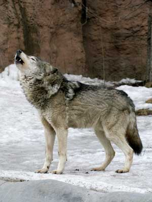

Los lobos se alimentan de carne, y se encuentran en la cima de la cadena alimentaria, esto hace que no tengan que preocuparse tanto por posibles depredadores. El hecho de que son animales fuertes y sociales significa que pueden cazar casi a cualquier animal para luego consumirlo.

Es sorprendente cuando se descubre que estos animales pueden consumir hasta 20 libras de carne en una sola comida. Sin embargo, para ellos la búsqueda de alimento no es diaria. Es por eso que se llevarán todo lo que puedan, cuando puedan conseguir algo. Los lobos cazan colectivamente y esto hace que sean capaces de matar con éxito a presas mucho más grandes y más poderosas que ellos.
Sin embargo los lobos tienen que tener cuidado porque cuando están cazando pueden encontrarse con adversarios que les pueden dar un mal golpe sobre su cabeza o sobre sus órganos vitales, y pueden morir en el intento de conseguir alimentos. Estar en el lugar correcto cuando la matanza está ocurriendo resulta importante, y es aquí cuando van a ser capaces de alejarse de estos eventos sanos y salvos.
Cuando los lobos están cazando tienen que ser muy cuidadosos. Mientras puedan dominar al animal, cazarán a cualquiera. Los lobos pueden correr hasta 35 millas por hora, pero la mayoría de las veces se observarán moviéndose a un ritmo de trote de unos 5 kilómetros por hora.
Los lobos tienen acceso a los alimentos en dependencia de la ubicación en la que les ha tocado vivir. Por ejemplo, en algunas áreas son capaces de alimentarse de alces y venados. Otros se les conocen por consumir animales domésticos tales como perros y gatos. En algunos casos el ganado puede ser una comida, por esta razón los lobos y los humanos han tenido una larga batalla durante décadas.
Cuando no pueden encontrar fuentes de alimentos más grandes, los lobos comen alimentos más pequeños, pueden comer serpientes, varios tipos de mamíferos, aves, lagartos, peces, e incluso algunos tipos de frutas y plantas, en este caso es cuando tienen dificultades para encontrar suficiente comida para sobrevivir.
Los lobos, cuando están completamente desarrollados, tienen 42 dientes en su boca. Tienen mandíbulas muy potentes que les permiten bloquear a sus presas, esto significa que pueden morder a las presas y aferrarse a ellas mientras esta está luchando en contra de ellos. En realidad, las presas tienen muy pocas posibilidades de sobrevivir a estos ataques tan poderosos.
Tal vez sea sorprendente saber que aún cuando los lobos tienen potencia y velocidad, estos enfrentamientos no siempre terminan siendo un éxito. Las presas que persiguen a veces resultan imposibles de dominar, incluso un grupo con varios lobos, a veces le es difícil encontrar suficiente comida.
Cuando salen a cazar, el grupo, de manera estratégica, trata de emboscar a sus víctimas, y aún así, es posible que la presa pueda alejarse de ellos. Los lobos seguirán intentando encontrar una nueva presa, estos animales no se dan por vencidos tan fácilmente. Cuando llega la hora de comer tragaran cuanto puedan, tienen molares puntiagudos que les permiten extraer las carnes de sus presas y algunos dientes planos que les para aplastar huesos.
Mientras que la manada de lobos va a cazar, algunos miembros se quedan atrás para cuidar a los cachorros. Cuando los cazadores regresan alimentaran a los cachorros y a sus cuidadores, los adultos que ya se han alimentado comenzarán a regurgitar carne para que los más pequeños puedan comer.